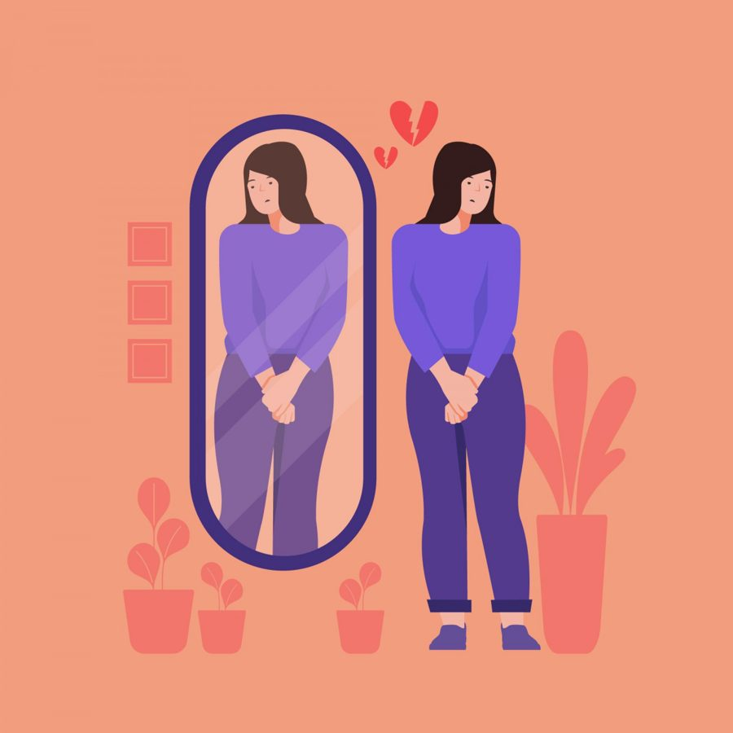

Мне кажется, многие в своей жизни сталкивались с ощущением: вы делаете что-то важное - закрываете проект, наводите порядок в давно запущенной комнате, наконец-то говорите «нет» там, где всегда молча кивали. И вместо ожидаемого облегчения или даже радости внутри - тишина и пустота. Или, что ещё чаще, тут же поднимается мысль: «Ну и что? Это же ерунда. Любой бы так и сделал». Как будто кто-то внутри вас тут же стирает ластиком всё, что вы только что с таким трудом нарисовали.
Мы умеем мечтать о грандиозном. О вершинах, прорывах, ярких свершениях, которые точно будут замечены и оценены. Но проходим, не замечая, мимо своих же маленьких, но абсолютно реальных побед. Они растворяются в фоне будней, как будто их и не было вовсе.
Я сама много лет была виртуозом в этом деле. Помню, как после защиты диссертации (события, на подготовку к которому ушло 3 года), мой главный внутренний комментарий был: «Ну, это было не так сложно. При некотором усилии любой сможет защититься». Я не просто не порадовалась - я моментально обесценила титанический труд, будто это была не моя заслуга, а случайность. Сейчас я понимаю, что так психика пыталась защититься: если не признавать цену победы, то и горечь возможного поражения будет не такой сильной. Стратегия выживания, которая, увы, убирает не только боль, но и всю палитру прожитого.
Со временем я выработала для себя простой метод из трёх шагов, который помогает перестать красть у себя то, что по праву ваше.
Шаг первый: замечать маленькое.
Не глобальное «покорить мир», а самое простое «сегодня я сделала что-то несмотря на...».Вечером задайте себе один вопрос: «Что я сегодня сделала, несмотря на усталость / тревогу / отсутствие настроения?». Ответом может быть что угодно: вы позволили себе лечь спать раньше, не доделав все дела по списку. Вы сдержались и не ответили на провокацию. Вы выпили стакан воды, а не третью чашку кофе. Это и есть кирпичики, из которых строится ваше благополучие.
Шаг второй: называть своё.
Нам нужно вернуть себе авторство. Скажите это вслух или напишите на бумаге: «Я это сделала». Без «но», «хотя», «можно было бы лучше». Просто: «Я провела сложный разговор». «Я приготовила завтрак». «Я отменила ненужную встречу». Когда вы называете действие, вы признаёте: это была я. Моё усилие, моё решение, мой шаг.Шаг третий: останавливаться, чтобы признать.
Это самый важный момент. Когда действие завершено, сделайте паузу. Буквально на 10 секунд. Остановитесь и позвольте себе физически почувствовать разницу между состоянием «я делаю» и «я сделала». Сделайте вдох. Это будет не просто отдых - это момент, когда ваш мозг и нервная система регистрируют завершение. Закрепляют успех не в виде галочки в списке, а как чувственный опыт.Эта практика про базовое уважение к собственному пути. Каждый микро-шаг, который вы делаете, преодолевая внутреннее сопротивление, имеет значение. Потому что в погоне за большими целями мы легко забываем одну простую вещь: ваша сегодняшняя обыденность, ваши «несмотря на», ваше право лечь спать пораньше когда-то могли быть самой заветной, почти недостижимой мечтой. Той самой, о которой вы даже боялись думать вслух.
Кто-то когда-то мечтал просто выспаться. Иметь своё личное пространство. Возможность сказать «не хочу» без катастрофических последствий. Возможность пойти к психологу, когда тяжело, а не «выживать» в одиночку, как наши предки, которые жили без многих благ, просто потому, что их не существовало.
Вы имеете право признавать своё. Не потому, что это грандиозно, а потому, что это ваше.
И этот путь, сложенный из этих маленьких, непарадных шагов, и есть настоящая жизнь, которую не надо обесценивать. Её стоит замечать.Статья подготовлена на основе материалов психологической практики. Если тема откликнулась, вы можете связаться со мной для обсуждения возможности индивидуальной работы.
Статья опубликована на b17.ru.